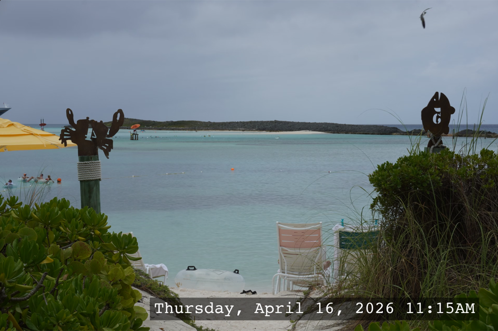
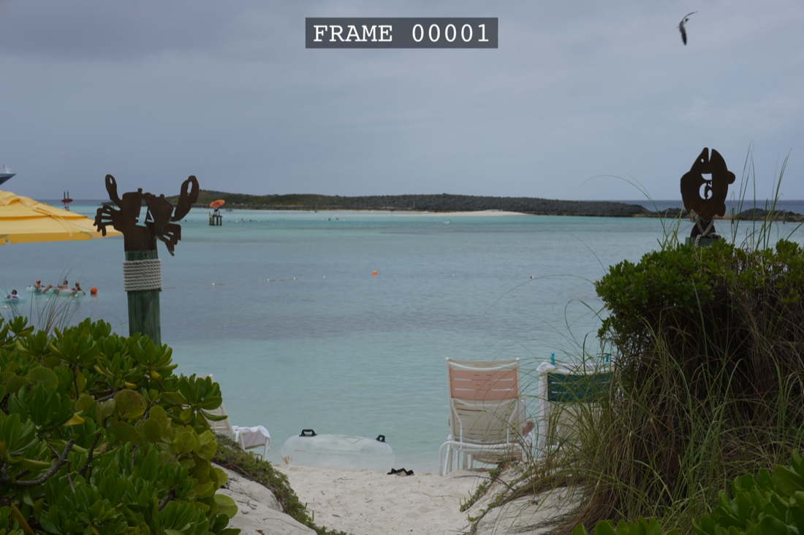

How to use SISR
Start with the Mac app — download, pick folders, render. This guide also covers which folder to select when you have one sequence or many, then every setting in the window. For power users, installing from source and the command line mirror the same behavior for automation. For crop diagrams, see Crops & framing. For still-frame examples, see sample exports.
Quick start (Mac)
Download SISR for macOS from GitHub Releases, unzip SISR-macOS.zip, and drag SISR.app into Applications. Double-click to open — no Python or Terminal setup required.
Download for Mac Pick the release asset that matches your Mac if more than one is listed.
Which folder to choose: one sequence or a whole batch
SISR scans the input folder you select and every subfolder under it. Each directory that contains image files is treated as a potential sequence and can become its own video (named after that folder) in your output location.
-
One video: set the input to the folder that directly
holds your numbered frames (for example only
…/Vacation/day01/). Only that sequence is processed (unless images also sit in parent folders — see below). -
Many videos at once: set the input to a parent
folder that contains one subfolder per sequence (for
example
…/Vacation/withday01,day02, and so on). SISR walks the tree and renders each qualifying folder.
If a parent folder also contains image files alongside subfolders, that parent may produce its own output as well — for predictable batches, keep each sequence in its own folder and avoid mixing loose images at the parent level.
The command line uses the same discovery rules with
--input.
Windowed app
On Mac, open SISR from Applications. If you installed from source, run
python -m sisr with no arguments to open the same
interface:
python -m sisr| Control | What it does |
|---|---|
| Input directory | Root folder to scan — see one sequence vs batch. Each folder with images must hold a valid numbered sequence. |
| Output directory | Where videos are saved (created if needed). One file per sequence folder. |
| Crop |
None — use the full frame; optional max width/height scale
the result. Instagram — 1080×1920 (9:16 portrait). HD — 1920×1080 (16:9). UHD — 3840×2160 (16:9, 4K). Typical camera photos are 3:2; see what that looks like for HD, 4K, and Instagram. |
| Position (HD / UHD) | For HD and 4K: Center, Keep top, or Keep bottom — which part of a tall photo stays in the 16:9 frame (usual for 3:2 and 4:3 shots). Illustrated for 3:2. Not used for Instagram or when crop is None. |
| Max width / Max height | Only when Crop is None. Scales the whole image to fit: use width alone, height alone, or both to stay inside a maximum box. Sizes round to even pixels for compatibility with video codecs. |
| Overlay |
None — no text overlay. Date — overlays the date the photo was taken using camera metadata when available, otherwise the file’s modification time. Frame — draws the frame index in the sequence. |
| Quality |
Default — everyday compressed video (small files, easy sharing). ProRes / ProRes HQ — high-quality MOV for editors; much larger files. GIF — an animated GIF instead of a video file. |
| Start rendering | Renders each discovered sequence. Watch the progress bar and any messages if a folder’s files are not numbered correctly. |
What overlays and crops look like
Still frames from real exports (your content will differ). Compare the overview gallery for the same ideas in one place.



Image naming and sequences
Name your files in order with a running number, for example
holiday_0001.jpg, holiday_0002.jpg. Numbers must be
consecutive with no gaps. Common formats such as JPEG, PNG, TIFF, and BMP are
supported.
Advanced: install from source
Use this path on Windows or Linux, if you contribute to the project, or if you need a non-Mac environment before running the CLI.
- Install Python 3.10 or newer.
-
Clone or download the repository, then install dependencies:
pip install -r requirements.txt - Install ffmpeg and ensure it is on your PATH (see ffmpeg.org or your package manager).
Full details: README on GitHub.
Command line (automation)
Pass arguments to run in the terminal instead of the windowed app. The same
--input rules apply as in batch vs single folder
— SISR finds every directory under the input path that contains images and renders
each valid sequence.
python -m sisr --input <input_dir> --output-dir <output_dir> [options]Required: --input, --output-dir.
| Option | Meaning |
|---|---|
--fps <n> |
Frames per second (default 30). |
--instagram-crop |
Instagram 9:16 crop (1080×1920). Mutually exclusive with other crops. |
--hd-crop center|keep_top|keep_bottom |
1080p 16:9 crop with vertical alignment when needed. |
--uhd-crop center|keep_top|keep_bottom |
4K 16:9 crop with vertical alignment when needed. |
--overlay-date / --overlay-frame |
Mutually exclusive overlays (date or frame number). |
--quality default|prores|proreshq|gif |
Output quality / container behavior as in the GUI. |
--max-width / --max-height |
Only if no crop flags are set. Same semantics as the GUI max dimensions. |
Example:
python -m sisr --input ./frames --output-dir ./out --hd-crop keep_top --overlay-date